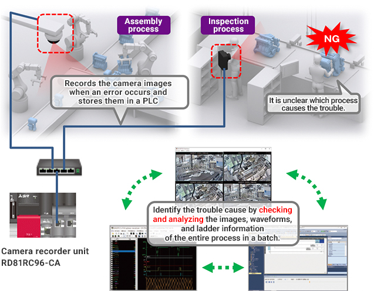

Solutions
Automotive Manufacturing

Engine Assembly
- Enhancing traceability by storing serial numbers of mechanical parts and process/equipment history information in a database
- Improving quality by preventing incomplete fitting of connectors
- Performing preventive maintenance by monitoring the operational status of robots
- Reducing cycle time of tightening screws with a nut runner
- Shortening recovery time when an error occurs by monitoring processes automated by robots and processes with operators

Solutions to the Issues
| Issues | Solutions |
|---|---|
| Enhancing traceability by storing serial numbers of mechanical parts and process/equipment history information in a database | Link the engine assembly information and each mechanical part information collected by the MES Interface module in a database. |
| Improving quality by preventing incomplete fitting of connectors | Collect noise during fitting with a high-speed analog input module and perform FFT analysis with a PLC. |
| Performing preventive maintenance by monitoring the operational status of robots | Visualize the operational status of robots with e-F@ctory starter package. |
| Reducing cycle time of tightening screws with a nut runner | Switch to torque control during high-speed operation. |
| Shortening recovery time when an error occurs by monitoring processes automated by robots and processes with operators | Monitor operation processes by connecting multiple network cameras to one PLC. |
Issues
Enhancing traceability by storing serial numbers of mechanical parts and process/equipment history information in a database
Solutions
Store mechanical part serial numbers and process information collected from each process in a database server.Realize traceability by linking the engine assembly information and mechanical part information collected by the MES Interface module in a database.
- Link product serial numbers to various data, which allows not only tracking back of each product production process but also data utilization for various purposes.
Point
- Link data collected by the MES Interface module and equipment history information of each mechanical part in a database, and utilize the linked data as a single piece of information.
Product Lineup
Issues
Improving quality by preventing incomplete fitting of connectors
Solutions
Collect noise during fitting with a high-speed analog input module and perform FFT analysis with a PLC to eliminate quality inconsistencies caused by connector fitting operations that rely on the personnel's sense.
- Obtain analog input signals without high-frequency noise components by using a primary delay filter.
- Detect incomplete fitting by judging whether the input waveform is within the range of the reference waveform.
Point
- An interface module that captures analog signals from external devices to a PLC (Up to 4 channels in 5 μs.)
- FFT converts time-domain waveforms into frequency-domain waveform.
Product Lineup

Issues
Performing preventive maintenance by monitoring the operational status of robots
Solutions
Perform preventive maintenance of whole equipment by a robot controller collecting signals of operational status and emergency stop alarms from multiple robots, and e-F@ctory starter package analyzing/visualizing the collected data.
- Up to eight robots can be connected and monitored on a GOT with the robot monitoring in e-F@ctory starter package.
Point
- Detect errors that were difficult to find with a simple threshold monitoring by using waveform guard band monitoring.
- Easily identify trouble causes by 24-hour operation monitoring and trouble monitoring, leading to reduced downtime.
Product Lineup


Issues
Reducing cycle time of tightening screws with a nut runner
Solutions
Reduce cycle time by smoothly switching to torque control during high-speed operation without dropping the speed.
- The continuous operation to torque control of the Motion module/Simple Motion module smoothly switches position control to torque control without stopping the motor.
Point
- Motion control can be performed with a single controller reducing the size of the control panel.
- A wide variety of motion control such as speed-torque control and positioning control is available.
Product Lineup


Issues
Shortening recovery time when an error occurs by monitoring processes automated by robots and processes with operators
Solutions
Monitor operation processes by connecting multiple network cameras to one PLC via a camera recorder unit. Shorten the recovery and cause investigation time by analyzing images and log data of the entire process at an error occurrence.
- All device/label data are collected every scan along with timestamps before and after a trouble. Images took by network cameras are recorded.
Point
- Set cameras according to the situation of each process with the camera recorder unit that supports various types of cameras.
- Identify the trouble cause by checking and analyzing the images, waveforms, and ladder information of the entire process in a batch.
